A tutorial
Experienced Julia users and programmers fluent in other languages and graphics systems should have no problem using Luxor by referring to the rest of the documentation. For others, here is a tutorial to help you get started.
What you need
If you've already downloaded Julia, and have added the Luxor package successfully (using ] add Luxor):
$ julia
_
_ _ _(_)_ | Documentation: https://docs.julialang.org
(_) | (_) (_) |
_ _ _| |_ __ _ | Type "?" for help, "]?" for Pkg help.
| | | | | | |/ _` | |
| | |_| | | | (_| | | Version 1.6.0 (2021-03-24)
_/ |\__'_|_|_|\__'_| | Official https://julialang.org/ release
|__/ |
(v1.6) pkg> add Luxorthen you're ready to start.
You can work in a Jupyter or Pluto notebook, or perhaps use the Atom/Juno or VSCode editor/development environment. It's also possible to work in a text editor (make sure you know how to run a file of Julia code), or, at a pinch, you could use the Julia REPL directly.
Ready? Let's begin. The goal of this tutorial is to do a bit of basic 'compass and ruler' Euclidean geometry, to introduce the basic concepts of Luxor drawings.
First steps
We'll have to load just one package for this tutorial:
using LuxorHere's an easy shortcut for making drawings in Luxor. It's a Julia macro, and it's a good way to test that your system's working. Evaluate this code:
@png begin
text("Hello world")
circle(Point(0, 0), 200, :stroke)
endWhat happened? Can you see this image somewhere?
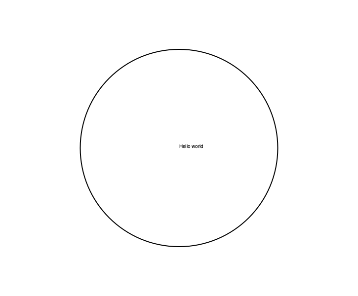
If you're using Juno, the image should appear in the Plots window. If you're working in a Jupyter or Pluto notebook, the image should appear below or above the code. If you're using Julia in a terminal or text editor, the image should have opened up in some other application, or, at the very least, it should have been saved in your current working directory (as luxor-drawing-(time stamp).png). If nothing happened, or if something bad happened, we've got some set-up or installation issues probably unrelated to Luxor...
Let's press on. The @png macro is an easy way to make a drawing; all it does is save a bit of typing. (The macro expands to enclose your drawing commands with calls to the Drawing(), origin, finish, and preview functions.) There are also @svg and @pdf macros, which do a similar thing. PNGs and SVGs are good because they show up in Juno and Jupyter. SVGs are usually higher quality too, but they're text-based so can become very large and difficult to load if the image is complex. PDF documents are always higher quality, and usually open up in a separate application.
This example illustrates a few things about Luxor drawings:
There are default values which you don't have to set if you don't want to (file names, colors, font sizes, and so on).
Positions on the drawing are specified with x and y coordinates stored in the Point type, and you can sometimes omit positions altogether.
The text was placed at the origin point (0/0), and by default it's left aligned.
The circle wasn't filled, but
stroked. We passed the:strokesymbol as an action to thecirclefunction. Many drawing functions expect some action, such as:fillor:stroke, and sometimes:clipor:fillstroke. This works either as an argument (:fill) or as a keyword argument (action=:fill).Did the first drawing takes a few seconds to appear? The Cairo drawing engine takes a little time to warm up. Once it's running, drawings appear much faster.
Once more, with more black, and some rulers:
@png begin
text("Hello again, world!", Point(0, 250))
circle(Point(0, 0), 200, :fill)
rulers()
end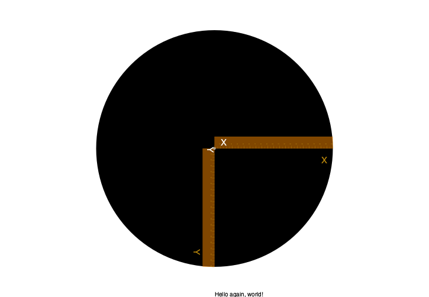
The x-coordinates usually run from left to right, the y-coordinates from top to bottom. So here, Point(0, 250) is a point at the left/right center, but at the bottom of the drawing.
Euclidean eggs
For the main section of this tutorial, we'll attempt to draw Euclid's egg, which involves a bit of geometry.
For now, you can continue to store all the drawing instructions between the @png macro's begin and end markers. Technically, however, working like this at the top-level in Julia (ie without storing instructions in functions which Julia can compile) isn't considered to be 'best practice', because the unit of compilation in Julia is the function. (Look up 'global scope' in the documentation.)
@png beginand first define the variable radius to hold a value of 80 units (there are 72 units in a traditional inch):
radius=80Select gray dotted lines. To specify a color you can supply RGB (or HSB or LAB or LUV) values or use named colors, such as "red" or "green". "gray0" is black, and "gray100" is white. (For more information about colors, see Colors.jl.)
setdash("dot")
sethue("gray30")(You can use setcolor instead of sethue — the latter doesn't affect the current opacity setting.)
Next, make two points, A and B, which will lie either side of the origin point. This line uses an array comprehension - notice the square brackets enclosing a for loop.
A, B = [Point(x, 0) for x in [-radius, radius]]x uses two values from the inner array, and a Point using each value is created and stored in its own variable. It seems hardly worth doing for two points, but it shows how you can assign more than one variable at the same time, and also how to generate points.
With two points defined, draw a line from A to B, and stroke it.
line(A, B, :stroke)Draw a stroked circle too. The center of the circle is placed at the origin. You can use the letter O as a short cut for Origin, ie the Point(0, 0).
circle(O, radius, :stroke)
end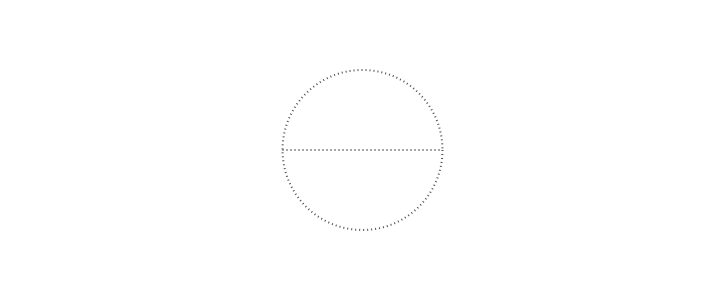
Labels and dots
It's a good idea to label points in geometrical constructions, and to draw small dots to indicate their location clearly. For the latter task, small filled circles will do. For labels, there's a special label function we can use, which positions a text string close to a point, using angles or points of the compass, so :N places the label to the north of a point.
Edit your previous code by adding instructions to draw some labels and circles:
@png begin
radius=80
setdash("dot")
sethue("gray30")
A, B = [Point(x, 0) for x in [-radius, radius]]
line(A, B, :stroke)
circle(Point(0, 0), radius, :stroke)
# >>>>
label("A", :NW, A)
label("O", :N, O)
label("B", :NE, B)
circle.([A, O, B], 2, :fill)
circle.([A, B], 2radius, :stroke)
end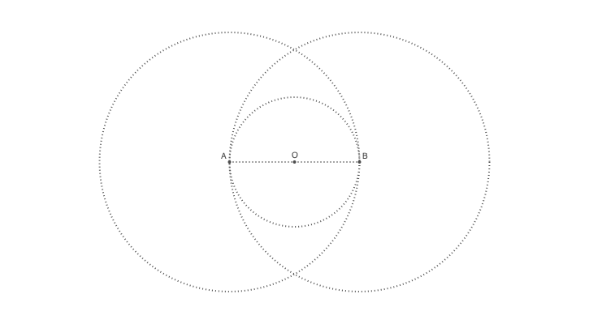
While we could have drawn all the circles as usual, we've taken the opportunity to introduce a powerful Julia feature called broadcasting. The dot (.) just after the function name in the last two circle function calls tells Julia to apply the function to all the arguments. We supplied an array of three points, and filled circles were placed at each one. Then we supplied an array of two points and stroked circles were placed there. Notice that we didn't have to supply an array of radius values or an array of actions — in each case Julia did the necessary broadcasting (from scalar to vector) for us.
Intersect this
We're now ready to tackle the job of finding the coordinates of the two points where two circles intersect. There's a Luxor function called intersectionlinecircle that finds the point or points where a line intersects a circle. So we can find the two points where one of the circles crosses an imaginary vertical line drawn through O. Because of the symmetry, we'll only have to do circle A.
@png begin
# as before
radius=80
setdash("dot")
sethue("gray30")
A, B = [Point(x, 0) for x in [-radius, radius]]
line(A, B, :stroke)
circle(O, radius, :stroke) # use letter O for Point(0, 0)
label("A", :NW, A)
label("O", :N, O)
label("B", :NE, B)
circle.([A, O, B], 2, :fill)
circle.([A, B], 2radius, :stroke)The intersectionlinecircle takes four arguments: two points to define the line and a point/radius pair to define the circle. It returns the number of intersections (probably 0, 1, or 2), followed by the two points.
The line is specified with two points with an x value of 0 and y values of ± twice the radius, written in Julia's math-friendly style. The circle is centered at A and has a radius of AB (which is 2radius). Assuming that there are two intersections, we feed these to circle and label for drawing and labeling using our new broadcasting superpowers.
# >>>>
nints, C, D =
intersectionlinecircle(Point(0, -2radius), Point(0, 2radius), A, 2radius)
if nints == 2
circle.([C, D], 2, :fill)
label.(["D", "C"], :N, [D, C])
end
end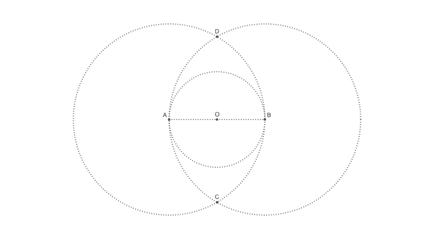
The upper circle
Now for the trickiest part of this construction: a small circle whose center point sits on top of the inner circle and that meets the two larger circles near the point D.
Finding this new center point C1 is easy enough, because we can again use intersectionlinecircle to find the point where the central circle crosses a line from O to D.
Add some more lines to your code:
@png begin
# >>>>
nints, C1, C2 = intersectionlinecircle(O, D, O, radius)
if nints == 2
circle(C1, 3, :fill)
label("C1", :N, C1)
end
end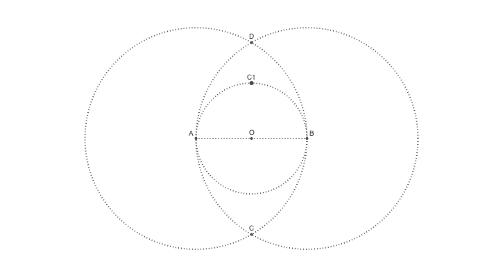
The two other points that define this circle lie on the intersections of the large circles with imaginary lines through points A and B passing through the center point C1. We're looking for the lines A-C1-ip, where ip is somewhere on the circle between D and B, and B-C1-ip, where ip is somewhere between A and D.
To find (and draw) these points is straightforward. We'll mark these as intermediate for now, because there are in fact four intersection points but we want just the two nearest the top:
# >>>>
nints, I3, I4 = intersectionlinecircle(A, C1, A, 2radius)
nints, I1, I2 = intersectionlinecircle(B, C1, B, 2radius)
circle.([I1, I2, I3, I4], 2, :fill)So we can use the distance function to find the distance between two points, and it's simple enough to compare the values and choose the shortest.
# >>>>
if distance(C1, I1) < distance(C1, I2)
ip1 = I1
else
ip1 = I2
end
if distance(C1, I3) < distance(C1, I4)
ip2 = I3
else
ip2 = I4
end
label("ip1", :N, ip1)
label("ip2", :N, ip2)
circle(C1, distance(C1, ip1), :stroke)
end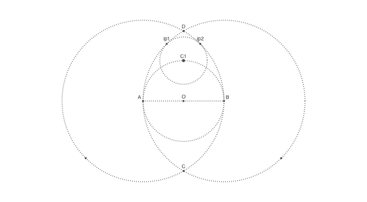
Eggs at the ready
We now know all the points on the egg's perimeter, and the centers of the circular arcs. To draw the outline, we'll use the arc2r function four times. This function takes: a center point and two points that together define a circular arc, plus an action.
The shape consists of four curves, so we'll use the :path action. Instead of immediately drawing the shape, like the :fill and :stroke actions do, this action adds a section to the current path.
label("ip1", :N, ip1)
label("ip2", :N, ip2)
circle(C1, distance(C1, ip1), :stroke)
# >>>>
setline(5)
setdash("solid")
arc2r(B, A, ip1, :path) # centered at B, from A to ip1
arc2r(C1, ip1, ip2, :path)
arc2r(A, ip2, B, :path)
arc2r(O, B, A, :path)Finally, once we've added all four sections to the path we can stroke and fill it. If you want to use separate styles for the stroke and fill, you can use a preserve version of the first action. This applies the action but keeps the path available for more actions.
strokepreserve()
setopacity(0.8)
sethue("ivory")
fillpath()
end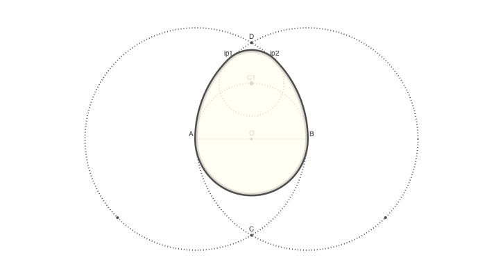
Egg stroke
To be more generally useful, the above code can be boiled into a single function.
function egg(radius, action=:none)
A, B = [Point(x, 0) for x in [-radius, radius]]
nints, C, D =
intersectionlinecircle(Point(0, -2radius), Point(0, 2radius), A, 2radius)
flag, C1 = intersectionlinecircle(C, D, O, radius)
nints, I3, I4 = intersectionlinecircle(A, C1, A, 2radius)
nints, I1, I2 = intersectionlinecircle(B, C1, B, 2radius)
if distance(C1, I1) < distance(C1, I2)
ip1 = I1
else
ip1 = I2
end
if distance(C1, I3) < distance(C1, I4)
ip2 = I3
else
ip2 = I4
end
newpath()
arc2r(B, A, ip1, :path)
arc2r(C1, ip1, ip2, :path)
arc2r(A, ip2, B, :path)
arc2r(O, B, A, :path)
closepath()
do_action(action)
endThis keeps all the intermediate code and calculations safely hidden away, and it's now possible to draw a Euclidean egg by calling egg(100, :stroke), for example, where 100 is the required width (radius), and :stroke is the required action.
(Of course, there's no error checking. This should be added if the function is to be used for any serious applications...!)
Notice that this function doesn't define anything about what color it is, or where it's placed. When called, the function inherits the current drawing environment: scale, rotation, position of the origin, line thickness, color, style, and so on. This lets us write code like this:
@png begin
setopacity(0.7)
for θ in range(0, step=π/6, length=12)
@layer begin
rotate(θ)
translate(0, -150)
egg(50, :path)
setline(10)
randomhue()
fillpreserve()
randomhue()
strokepath()
end
end
end 800 800 "eggstravaganza.png"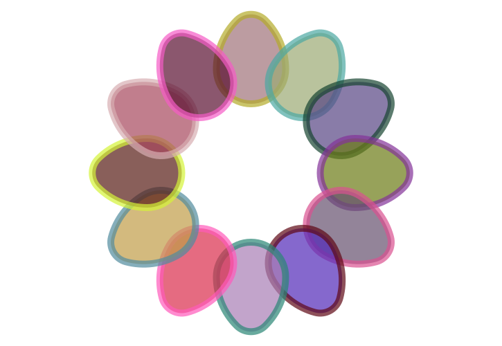
The loop runs 12 times, with theta increasing from 0 upwards in steps of π/6. But before each egg is drawn, the entire drawing environment is rotated by theta radians and then shifted along the y-axis away from the origin by -150 units (the y-axis values usually increase downwards, so, before any rotation takes place, a shift of -150 looks like an upwards shift). The randomhue function does what you expect, and the egg function is passed the :fill action and the radius.
Notice that the four drawing instructions are encased in a @layer begin...end shell. Any change made to the drawing environment inside this shell is discarded after the end. This allows us to make temporary changes to the scale and rotation, etc. and discard them easily once the shapes have been drawn.
Rotations and angles are typically specified in radians. The positive x-axis (a line from the origin increasing in x) starts off heading due east from the origin, and the y-axis due south, and positive angles are clockwise (ie from the positive x-axis towards the positive y-axis). So the second egg in the previous example was drawn after the axes were rotated by π/6 radians clockwise.
If you look closely you can tell which egg was drawn first — it's overlapped on each side by subsequent eggs.
Thought experiments
What would happen if the translation was
translate(0, 150)rather thantranslate(0, -150)?What would happen if the translation was
translate(150, 0)rather thantranslate(0, -150)?What would happen if you translated each egg before you rotated the drawing environment?
Some useful tools for investigating the important aspects of coordinates and transformations include:
rulersto draw the current x and y axesgetrotationto get the current rotationgetscaleto get the current scale
Polyeggs
As well as stroke and fill actions, you can use the path as a clipping region (:clip), or as the basis for more shape shifting.
The egg function creates a path and lets you apply an action to it. It's also possible to convert the path into a polygon (an array of points), which lets you do more things with it. The following code converts the egg's path into a polygon, and then moves every other point of the polygon halfway towards the centroid.
@png begin
egg(160, :path)
pgon = first(pathtopoly())The pathtopoly function converts the current path made by egg(160, :path) into a polygon. Those smooth curves have been approximated by a series of straight line segments. The first function is used because pathtopoly returns an array of one or more polygons (paths can consist of a series of loops), and we know that we need only the single path here.
pc = polycentroid(pgon)
circle(pc, 5, :fill)polycentroid finds the centroid of the new polygon.
This loop steps through the points and moves every odd-numbered one halfway towards the centroid. between finds a point midway between two specified points. Finally the poly function draws the array of points.
for pt in 1:2:length(pgon)
pgon[pt] = between(pc, pgon[pt], 0.5)
end
poly(pgon, :stroke)
end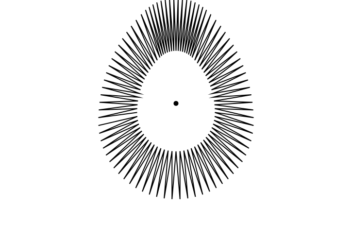
The uneven appearance of the interior points here looks to be a result of the default line join settings. Experiment with setlinejoin("round") to see if this makes the geometry look tidier.
For a final experiment with our egg function, here's Luxor's offsetpoly function struggling to draw around the spiky egg-based polygon.
@png begin
egg(80, :path)
pgon = first(pathtopoly()) |> unique
pc = polycentroid(pgon)
for pt in 1:2:length(pgon)
pgon[pt] = between(pc, pgon[pt], 0.8)
end
for i in 30:-3:-8
randomhue()
op = offsetpoly(pgon, i)
poly(op, :stroke, close=true)
end
end 800 800 "spike-egg.png"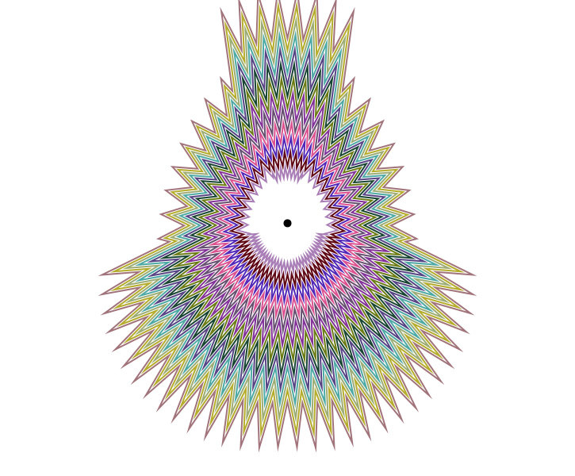
The small changes in the regularity of the points created by the path-to-polygon conversion and the varying number of samples it made are continually amplified in successive outlinings.
Clipping
A useful feature of Luxor is that you can use shapes as a clipping mask. Graphics can be hidden when they stray outside the boundaries of the mask.
In this example, the egg (assuming you're still in the same Julia session in which you've defined the egg function) isn't drawn, but is defined to act as a clipping mask. Every graphic shape that you draw now is clipped where it crosses the mask. This is specified by the :clip action which is passed to the do_action function at the end of the egg.
Here, the graphics are provided by the ngon function, which draws regular n-sided polygons.
using Luxor, Colors
@svg begin
setopacity(0.5)
eg(a) = egg(150, a)
sethue("gold")
eg(:fill)
eg(:clip)
@layer begin
for i in 360:-4:1
sethue(Colors.HSV(i, 1.0, 0.8))
rotate(π/30)
ngon(O, i, 5, 0, :stroke)
end
end
clipreset()
sethue("red")
eg(:stroke)
end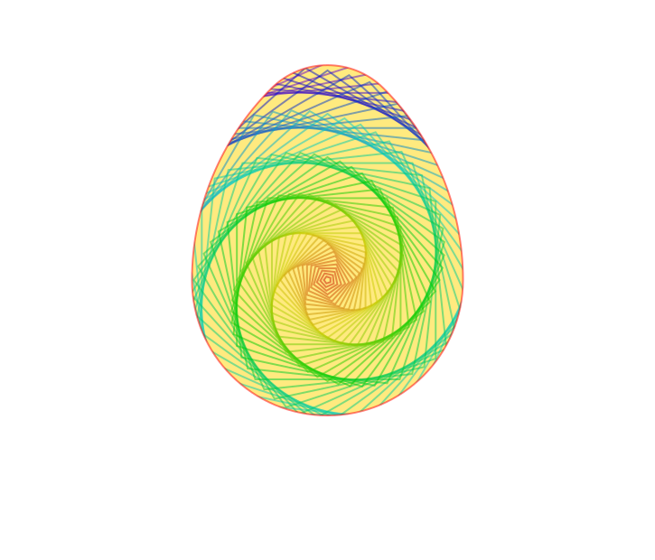
It's good practice to add a matching clipreset after the clipping has been completed. Unbalanced clipping can lead to unpredictable results.
Good luck with your explorations!